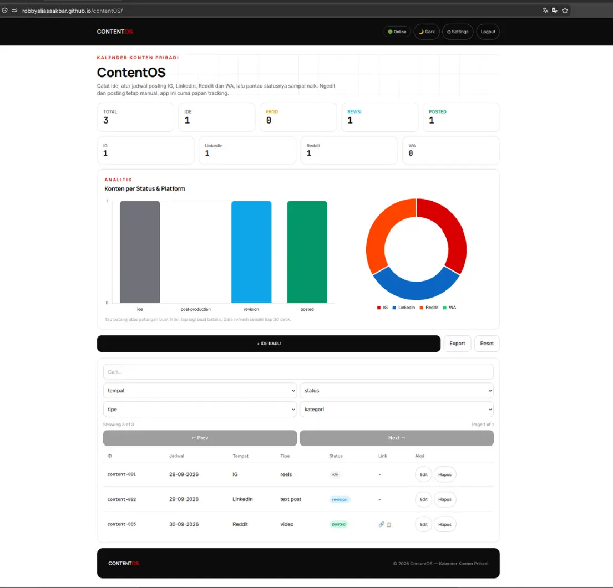
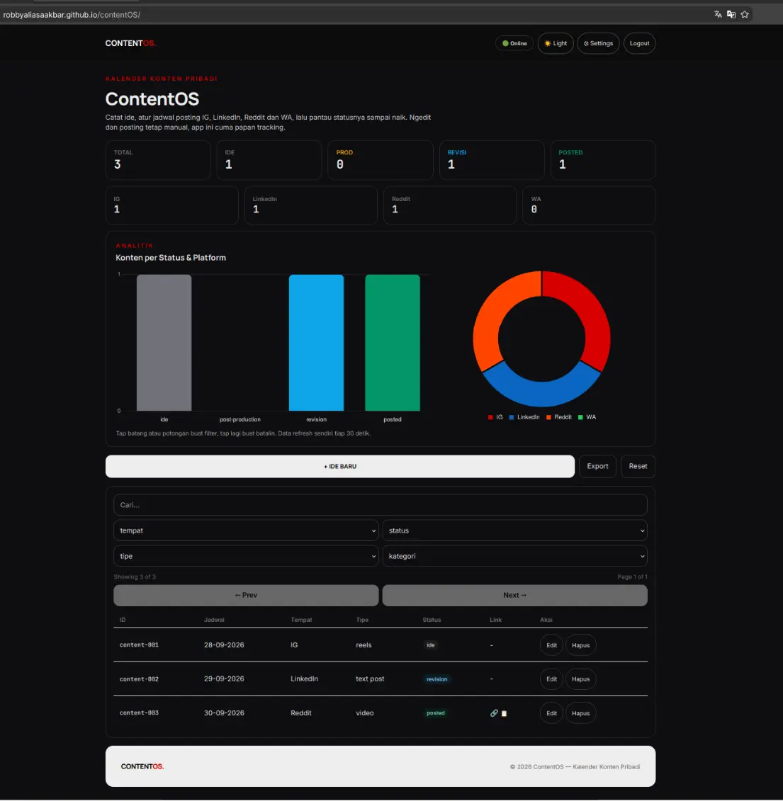
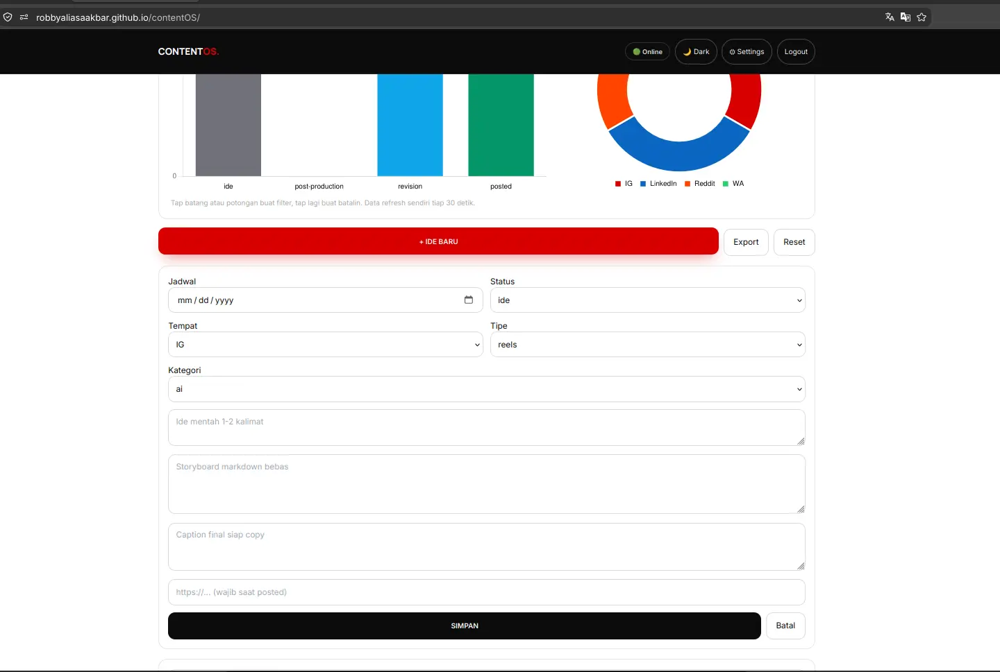
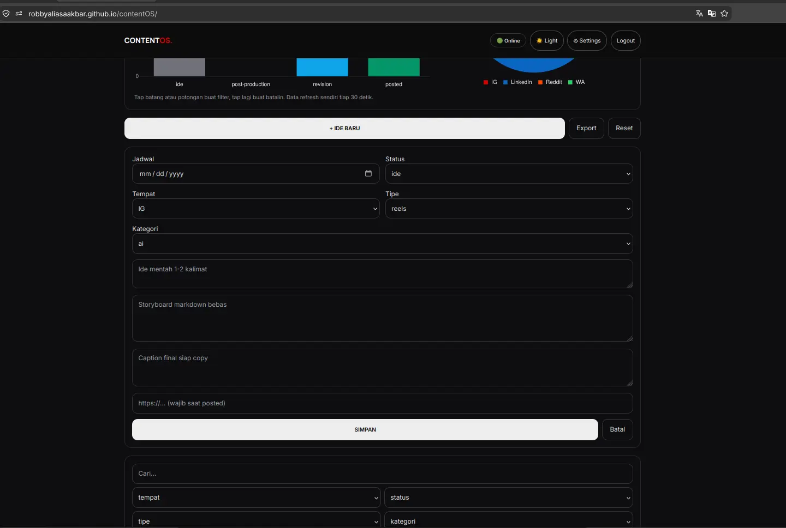
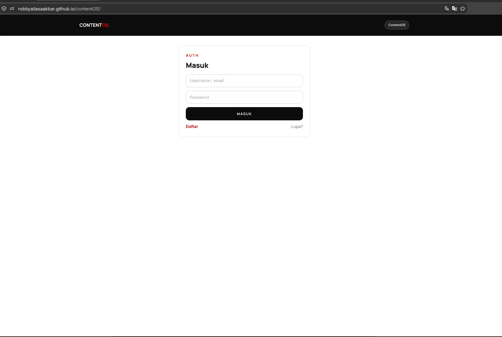
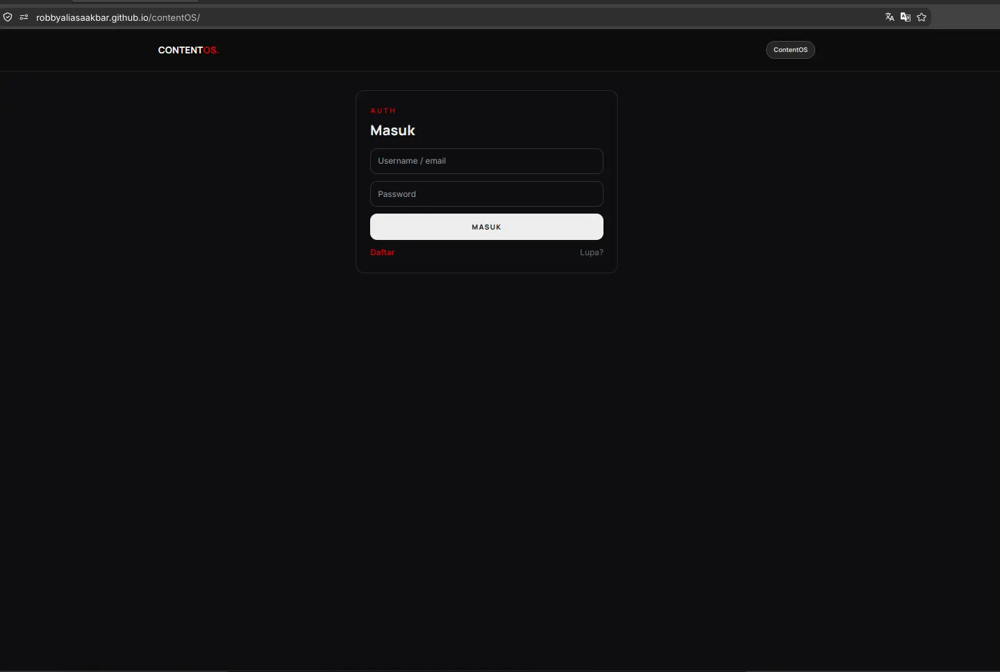
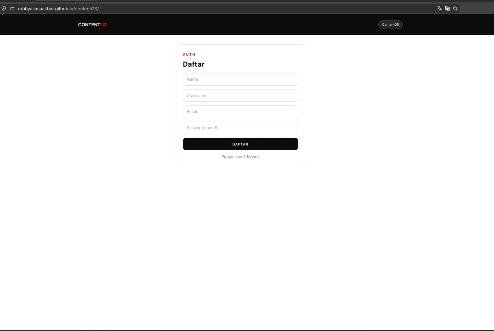
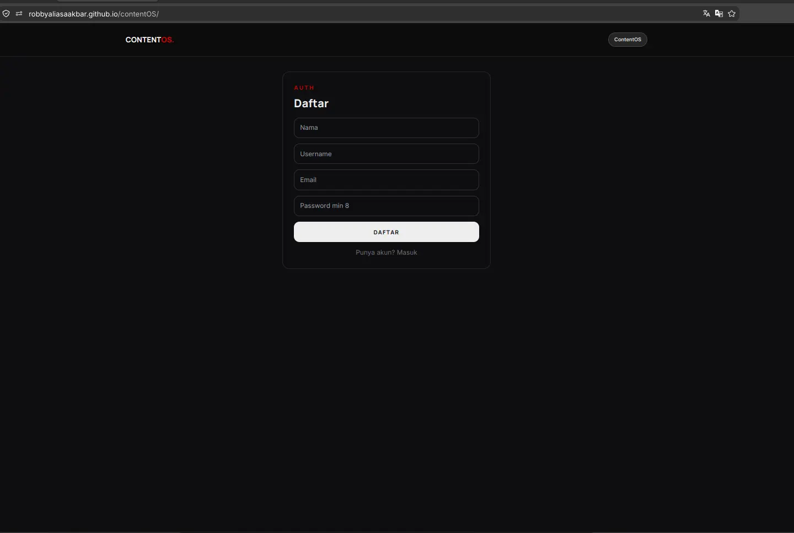

Experiment 014
Live React + Vite · Shared Auth · Chart.js Filters · Tailscale FunnelContent Tracking Web App With Server Side Pagination, React + Vite, Live on GitHub Pages.
Can a personal content tracker ship live on shared auth while keeping all 12 failures on the page?
Same Tiel-Coder-35B model · React 18 + Vite 6 · 8 verified captures · 2 Funnel doors · Online daily
Source Code
The source code is public. Prove it yourself.
You get the full frontend. React plus Vite, Chart.js tap to filter, server side pagination, plus content calendar. No secrets inside. The data API lives in its own repo with its own README.
github.com/robbyaliasaakbar/robbyaliasaakbar.github.io/tree/main/contentOS
github.com/robbyaliasaakbar/contentos-backend-api-service
System Requirements
Live App
/contentOS/ on GitHub Pages
Data API
Funnel :9443 to Docker :7010 Node Express
Auth API
Funnel :443 to Docker :7002 (token key: content.token)
Engine
None (no n8n, no in system AI, manual curation)
Dataset
content.db isolated SQLite (3 sample rows, smallest slot ID)
Build Size
384KB bundle (Chart.js included, localhost clean)
Local Dev
Vite dev server on :7011
Model Engine
Tiel-Coder-35B on llama.cpp
Built with the exact same local model as EXP 010, EXP 011, EXP 012, and EXP 013. The frontend is statically hosted on GitHub Pages. The data service runs inside Node Express on my personal computer, reachable via an encrypted Tailscale Funnel.
Screenshots
Side by Side Visual Proof: Light and Dark Themes
Every view in ContentOS supports daylight clarity and high contrast dark mode. All eight captures below were taken directly on live screens to document the actual production interface with real data records.
1. Main Dashboard and Analytics
Light vs Dark

2. Content Creation and Edit Modal
Light vs Dark

3. Shared Authentication Login
Light vs Dark

4. Account Registration Flow
Light vs Dark

Live Demo
Try the Real Application Online
The frontend is deployed live on GitHub Pages. You can explore the board, inspect the interactive charts, test server side pagination, and filter records directly in your browser.
Live frontend, home PC backend. If my computer or tunnel doors are closed, sign in and listing respond with an honest notification, which is expected and not broken. The captures above document the entire workflow. An agent scribe via MCP is planned for future milestones, written as an open proposal rather than a shipped feature. Demo access uses isolated dummy records only.
For those of you unable to read this data from technical standpoint, here is the conclusion:
1. My GitHub looked fine but my social feeds were empty for months, so I built a small notebook that never loses a content idea
2. You type an idea with a date and a platform, the board tracks it until you post it by hand, nothing posts itself
3. One login opens all four of my apps, this one only added its own token key, zero login code was written twice
4. Tap a chart and the list filters itself, new ideas pop in on their own about twice a minute, no refresh needed
5. The page is public but the engines sleep in my home computer, when it is off the page says so honestly and the pictures above are the proof
6. Everything that broke is written on this same page, twelve stories with receipts, and a robot scribe that writes ideas down for me is planned next, not promised today
Experiment Details
Architectural Decisions and Engineering Tradeoffs
ContentOS was built as a dedicated personal tracking tool rather than an automated content factory. Here are the five foundational engineering decisions that shaped the platform architecture and resolved early development blockers.
Failures 7 and 3
EXP 011 produced a single unified auth backend on port 7002, EXP 012 connected the CRM, EXP 013 onboarded CV screening, and ContentOS acts as customer number four. The portal speaks to the exact same /api/login and /api/me endpoints. It isolates its session under a distinct content.token key in local storage and manages themes via content.theme, yet the token verification lifecycle remains completely identical.
Cross origin requests from the local Vite port 7011 required updating allowed origins in the backend environment. Because Docker compose only parses environment definitions during container recreation rather than standard restarts, the container required a full recreate cycle. Preflight checks were verified from two independent origins to ensure genuine access control. An empty bearer token immediately yields HTTP 401, confirming defensive fail closed authentication.
Failures 1 and 2
Data storage relies on a dedicated SQLite file content.db, isolated from CRM and user tables. Custom identifiers use the content-xxx format. Rather than endlessly incrementing indices, the generator inspects active keys and reuses the lowest vacant integer slot. If rows 001, 003, and 004 exist, a new record claims slot 002, keeping database references orderly and compact.
The search filter q was expanded to query six record fields simultaneously, including platform, format, and status tags alongside text bodies. Record updates initially crashed due to a missing query parameter in the SQL update statement. Adding the missing argument and pairing it with a mandatory link check solved the problem. Marking content as posted without providing a valid destination URL is rejected with HTTP 400 Bad Request across both client forms and server endpoints.
Failures 5, 6, and 4
Rather than attempting to share or overwrite port 8443 used by miniLeads, ContentOS exposes its Node Express data API through a dedicated Tailscale Funnel on port 9443. This keeps external traffic pathways clean, predictable, and isolated per application service.
Container stability required transitioning from an Alpine base image to node:22-slim. The better-sqlite3 native driver crashed with segmentation faults (exit code 139) on Alpine due to missing prebuilt musl binaries. Adopting the Debian based slim image, a proven pattern from earlier projects, restored stability. Process restarts on the development host are strictly targeted by process identifier to prevent terminating neighbor backend runtimes.
Failures 8, 12, and 9
Deploying a client rendered application on GitHub Pages while supporting local development requires a clean environment switch. The repository uses index.template.html as a single line toggle. In development mode, the file loads unbundled source code from src/main.jsx. For production release, the built bundle is compiled with public tunnel endpoints baked in, verified with automated grep checks.
Assets compiled to the dist directory are copied to the site root using documented rollback procedures to prevent accidental asset loss. A build audit also caught an invisible footer bug where custom Tailwind utility classes had been dropped during pruning, establishing a strict verification checklist before closing releases.
Failures 10 and 11
User interactions must deliver immediate visual clarity without degrading input ergonomics. Newly created or updated table rows trigger a 900ms soft accent highlight before returning to default borders. In earlier iterations, skeleton loaders unmounted active inputs during background data refreshes, causing user keystrokes to drop out of focus.
Decoupling background refresh cycles from active input fields and binding table row keys to persistent database identifiers resolved focus disruption. Accent tones were preserved per system requirements while eliminating sticky outline bugs, and button hover states received explicit contrast rules for flawless dark theme legibility.
Evidence Log
Standalone Evidence Log: Terminal Receipts and Verification
Every architectural claim and backend endpoint is backed by verifiable command line outputs. Private authentication secrets, passwords, and personal tokens have been truncated, while raw status codes, JSON structures, and funnel mappings remain exact.
E1. Service Health and Public Funnel Verification
200 OK Both DoorsTesting both local backend port 7010 and public Tailscale Funnel port 9443 to prove end to end connectivity.
curl -s http://localhost:7010/health
{"ok":true}
curl -s https://aispec.tail06293c.ts.net:9443/health
{"ok":true}
Result: Both internal docker container and external encrypted tunnel answer with healthy status.
E2. Shared Authentication and Token Verification
Backend Port 7002Obtaining an authentication bearer token from EXP 011 auth backend and querying profile details.
TOKEN=$(curl -s -X POST http://localhost:7002/api/login \
-H "Content-Type: application/json" \
-d '{"identifier":"admin","password":"[REDACTED]"}' | python3 -c '
import sys, json
print(json.load(sys.stdin).get("token", ""))
')
curl -s http://localhost:7002/api/me -H "Authorization: Bearer $TOKEN"
{"email":"admin@example.com","username":"admin","role":"admin"}
Result: Reuses shared backend authentication, issuing tokens compatible across client applications.
E3. Dashboard Aggregation and Negative Link Validation
400 Bad Request VerifiedQuerying real time dashboard counts and verifying that posting without a link fails with HTTP 400.
curl -s http://localhost:7010/dashboard -H "Authorization: Bearer $TOKEN"
{"total":3,"by_status":{"ide":1,"revision":1,"posted":1},"by_tempat":{"IG":1,"LinkedIn":1,"Reddit":1}}
curl -s -X POST http://localhost:7010/content/ingest \
-H "Content-Type: application/json" \
-H "Authorization: Bearer $TOKEN" \
-d '{"tempat":"IG","tipe":"reels","status":"posted"}'
{"error":"Link wajib diisi saat status posted"}
Result: Live metrics aggregate records accurately, and missing link submissions are rejected with HTTP 400 without modifying database state.
E4. Filter, Search, Pagination Clamping and Export Receipts
Server Pagination VerifiedVerifying server side filters by platform, text search across formats, pagination bounds clamping, and filtered CSV export.
curl -s "http://localhost:7010/content?tempat=IG" -H "Authorization: Bearer $TOKEN" | python3 -c ' import sys, json print(json.load(sys.stdin)["total"]) ' 1 curl -s "http://localhost:7010/content?q=reels" -H "Authorization: Bearer $TOKEN" | python3 -c ' import sys, json print(json.load(sys.stdin)["total"]) ' 1 curl -s "http://localhost:7010/content?page=99&limit=2" -H "Authorization: Bearer $TOKEN" | python3 -c ' import sys, json d = json.load(sys.stdin) print(d["page"], d["totalPages"]) ' 2 2 curl -s "http://localhost:7010/content/export?tempat=IG" -H "Authorization: Bearer $TOKEN" | head -n 2 id,tempat,tipe,ide_konten,status,link_konten,tanggal content-001,IG,reels,Sample Instagram Post,ide,,2026-09-24
Result: Query filters return exact match totals, out of range page numbers clamp cleanly to last page, and CSV exports reflect active filter parameters.
E5. Fail Closed Security and CORS Preflight Receipt
Allowlist EnforcedVerifying defensive fail closed responses on missing or invalid tokens, and confirming CORS headers across local dev and GitHub Pages.
curl -s http://localhost:7010/content
{"error":"Login required"}
curl -s http://localhost:7010/content -H "Authorization: Bearer invalid_token"
{"error":"Invalid or expired token"}
curl -s -X OPTIONS https://aispec.tail06293c.ts.net/api/login \
-H "Origin: https://robbyaliasaakbar.github.io" \
-H "Access-Control-Request-Method: POST" -D - -o /dev/null | grep -i allow-origin
Access-Control-Allow-Origin: https://robbyaliasaakbar.github.io
Result: Unauthenticated requests are blocked immediately, and production CORS headers explicitly authorize GitHub Pages.
Failure Log
All 12 Failures Documented Honestly
Engineering credibility is forged in transparency. Here are all twelve real defects encountered during the development of ContentOS, divided into four major incident deep dives and eight concise technical lessons.
1. CORS Pitfalls Across Three Architectural Layers
Configuration Trap (#7)Symptom: The development bundle was attempting to talk to public funnel URLs, container restarts failed to load new origin rules, and local preflight checks showed misleading success.
Diagnosis: Soft container restarts do not reload modified environment file definitions. Testing requests from localhost to localhost created a false sense of security that failed when accessed over network boundaries.
Fix: Added origin allowlist rules, performed a full container recreate cycle, confirmed active environment variables using container shell inspection, and validated preflight headers across two independent hosts.
Lesson: A soft restart is not a recreate. Always verify running container environment variables directly.
2. Alpine Segmentation Faults on Native SQLite Driver
Container Runtime Trap (#6)Symptom: The backend container entered a persistent crash loop with exit code 139 and empty logs immediately after loading the database driver.
Diagnosis: The Alpine Linux base image lacks precompiled musl libc binaries for the native database driver, triggering immediate segmentation faults at runtime.
Fix: Replaced the Alpine base image with a Debian based node slim image, matching the stable container setup established during earlier CRM work.
Lesson: Inspect container configurations from sister applications before debugging native compilation issues on Alpine.
3. Skeleton Placeholders Consume Focus and Animation Timers
State Lifecycle Trap (#11)Symptom: Accent highlight flashes failed to appear on updated rows, and typing search terms caused the text input to abruptly drop focus.
Diagnosis: Background data refreshes mounted temporary skeleton placeholders across the interface, unmounting active DOM elements and interrupting user keystrokes.
Fix: Maintained filter and search inputs permanently mounted, attached table row keys to persistent database identifiers, and decoupled background synchronization from input states.
Lesson: Never allow background data sync to unmount or redraw user input fields currently in focus.
4. Missing Positional Parameter Halts Record Updates
Query Binder Trap (#2)Symptom: Submitting form edits crashed the server route with unhandled SQL parameter binder exceptions.
Diagnosis: The SQL update statement defined ten positional placeholders but passed only nine argument variables in the execution array.
Fix: Reconciled placeholder count, attached the missing link flag parameter, and added defensive parameter validation guards.
Lesson: Test record modification routines on day one rather than assuming write symmetry from creation handlers.
5. Search Query Misses Format and Platform Fields (##1)
Initial search filters evaluated only the idea body text. Updated database query to scan platform, format, and status fields concurrently.
6. Empty Token Treated as Authorization Bug (##3)
Missing authorization header returning HTTP 401 was initially investigated as a defect before confirming it is correct fail closed security.
7. Broad Process Termination Halts Neighbor Services (##4)
Executing broad process termination commands halted sibling applications running on the machine. Replaced with strict process identifier tracking.
8. Tailscale Funnel Port Conflict with Prior Application (##5)
Attempting to bind the CRM tunnel port created traffic routing collisions. Assigned a dedicated port on 9443 for ContentOS traffic.
9. Stale Localhost References in Static Production Build (##8)
Production build inadvertently baked development localhost addresses. Added automated grep checks to verify zero localhost occurrences in release bundles.
10. Transparent Footer Caused by Dropped Utility Classes (##9)
Unpurged custom utility classes caused footer text to render transparently. Added custom declarations to build configuration before deploy.
11. Persistent Selection Ring Outlines on Table Rows (##10)
Focus outlines failed to clear after record selection. Added a 900ms cleanup timer and programmatic blur events to clear visual focus.
12. Direct Root Build Overwrite Risks Asset Loss (##12)
Copying compiled assets directly into the project root risked overwriting source files. Established a clear deploy template switcher and backup routine.
Frontend Architecture
Interactive State Management and Chart Tap to Filter
The user interface is powered by React 18, Vite 6, and Chart.js. Below are the key patterns for state synchronization and interactive chart triggers.
API Data Fetching and Token Header - src/api.js (essence)
const API_URL = import.meta.env.VITE_API_URL
export async function fetchContentList(page = 1, filter = {}) {
const token = localStorage.getItem('content.token')
const query = new URLSearchParams({ page, ...filter })
const response = await fetch(`${API_URL}/content?${query}`, {
headers: {
'Authorization': `Bearer ${token}`
}
})
if (!response.ok) {
throw new Error('Failed to retrieve content records')
}
return response.json()
}
Chart Tap to Filter Interaction - src/StatusChart.jsx (essence)
export function StatusChart({ data, onSelectStatus }) {
const options = {
responsive: true,
onClick: (event, elements) => {
if (elements.length > 0) {
const index = elements[0].index
const selectedStatus = data.labels[index]
onSelectStatus(selectedStatus)
}
}
}
return <Bar data={data} options={options} />
}
Networking Architecture
Two-Door Network: Dedicated Data Gateway and Shared Auth
Connecting a static client application on GitHub Pages to local containers requires clean network controls. Tailscale Funnel creates public encrypted HTTPS doors directly to local services without exposing the host.
Door 1: Shared Authentication Gateway
Public URL: https://aispec.tail06293c.ts.net
Internal Target: Docker container on port 7002 (PHP auth engine from EXP 011).
Handles account logins, email OTP verification, and session token checks across all four client applications.
Door 2: Dedicated ContentOS Data Gateway
Public URL: https://aispec.tail06293c.ts.net:9443
Internal Target: Docker container on port 7010 (Node Express + SQLite content.db).
Serves content records, dashboard aggregations, pagination metadata, and CSV exports on a dedicated port without conflicts.
Both public gateways terminate encrypted TLS connections at the machine boundary. Static web pages download into the visitor browser and communicate with both endpoints without requiring intermediate cloud servers.
FAQ
Frequently Asked Questions
Why build a tracker instead of using Notion or Sheets? ▼
Owning the frontend and the backend keeps it light and personal, and every lesson lands in my portfolio with receipts. Sheets cannot give me that.
Why does posting stay manual? ▼
The app is a calendar plus a tracker by decision. Editing and design stay in my hands. Version one proves tracking first, robots later.
What is the MCP agent idea about? ▼
A future door that lets my AI helper save ideas straight into the app. Planned and written openly, not shipped. Version one is human fingers only.
Twelve failures on a portfolio page? Is that wise? ▼
That is the point. Each one has a cause plus a fix plus a check. A calm app means little without an honest log beside it.
Why does it fail when your PC is off? ▼
No VPS by decision, home PC plus secure tunnels (:443 auth, :9443 data). Off means doors closed and the page says so instead of pretending. Same honesty as EXP 010 through 013.
Why charts if the first plan said no charts? ▼
The owner changed the call openly. Charts earn their place because tapping one filters the list. The amendment is written in the open with the bundle cost attached.
Live Status
Live Status - Live Frontend, Home-PC Backend
✅ What works now
- Live React application hosted on GitHub Pages
- Full content record lifecycle with client and server validation
- Server side pagination with automatic bounds clamping
- Interactive Chart.js integration with tap to filter triggers
- Shared authentication integration with isolated token storage
- Background polling updates every thirty seconds without page reloads
- High contrast dark mode with preserved specificity rules
🚧 What isn't production yet
- Service runs on personal home computer rather than 24/7 cloud VPS
- Automated AI content scribe via MCP remains a planned milestone
- Single file SQLite database without clustering or failover
- Backend availability depends on host uptime and active tunnel doors
- Long term service hardening reserved for future infrastructure projects
Frontend live 24/7 on GitHub Pages. Backend runs on my personal PC (funnels :443 + :9443). Off -> login/list fails with a message, expected. Screenshots + curl logs show how it works.
Disclaimer
Disclaimer - Live Frontend, Local Backend, Not Production-Hardened
Validated with the exact same Tiel-Coder-35B model through llama.cpp-server (inference flags in EXP 001). Replica records, no real user data. OTP, tokens, and passwords are never shown.
First UI: EXP 010 (Job Tracker) · Shared backend: EXP 011 (:7002) · Second customer: EXP 012 (/miniLeads/) · Third customer: EXP 013 (/cv_screening/) · This: EXP 014 (/contentOS/) · Machine: EXP 001